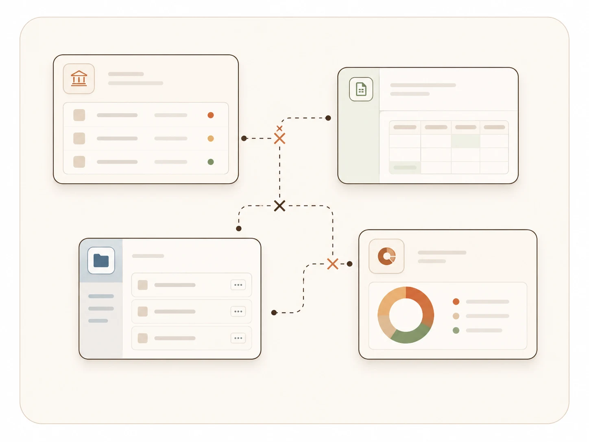
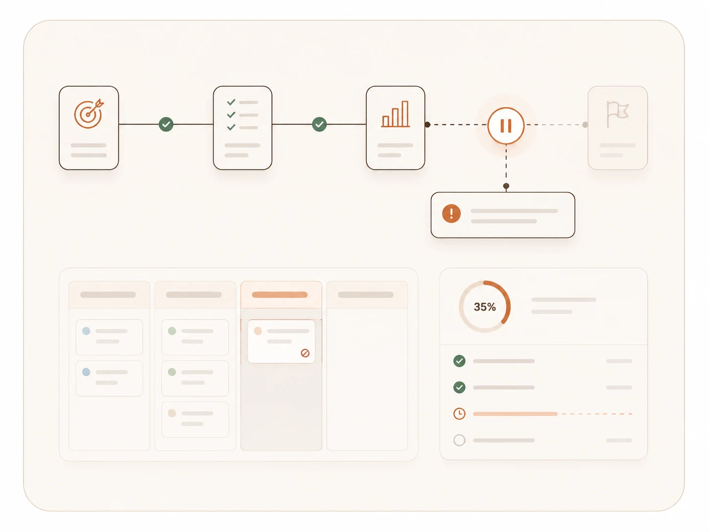

01
Public Sector
Government agencies & statutory bodies
Multi-agency digital mandates — coordinating services, systems, and public data across complex environments.
For governments and enterprises operating in complex environments — from strategy and policy to fully operational digital systems.
Agent Techybara & Agent Oyen, reporting in. A28 Global turns high-level intent into secure, operational systems — strategy, architecture, data, AI, and automation, delivered end to end by one accountable team. No hand-offs, no theatre.
We are typically engaged when organisations face complexity across systems, data, and stakeholders.
Across agencies, departments, and platforms
Information without insight
Strategy disconnected from execution
Many stakeholders, environments, systems
A connected delivery model for strategy, systems, data, and transformation.
System architecture, portals, integrations, and cloud platforms designed to operate at scale.
Data architecture, dashboards, predictive models, and decision-support intelligence layers.
Workflow automation, AI-assisted operations, and integration of agents into existing systems.
Digital strategy, programme governance, transformation advisory, and operating model design.
A consistent approach across every engagement — from first brief to live system.
Drag the loop to explore each phase.
Architecture-first approach for long-term scalability and maintainability
Integrated design across systems, data, and workflows
Hands-on delivery, not just advisory
Built for real-world constraints, governance, and operational environments
Multi-agency platform integrating systems, data, and workflows
Data platform supporting labour market insights and decision-making
Digital system implementation for operational efficiency
We work with institutions and delivery teams turning complex mandates into usable digital systems.
Multi-agency digital mandates — coordinating services, systems, and public data across complex environments.
Operating at institutional scale — modernising core systems, analytics layers, and operational workflows.
Shared implementation depth — architecture, data, automation, and delivery support for partner teams.
From concept to usable systems — turning ideas into platforms, pilots, and deployable products.
For governments and enterprises in complex environments — we design, build, and run the systems that ship. From strategy to AI to operations, all by the same hands.


We are typically engaged when organisations face complexity across systems, data, and stakeholders — that's the moment we do our best work.

Across agencies, departments, and platforms.

Information without insight.

Strategy disconnected from execution.

Many stakeholders, environments, systems.
A connected practice covering strategy, systems, data, and transformation — designed to operate at scale, in complex real-world environments.
System architecture, portals, integrations, and cloud platforms designed to operate at scale.
BuildData architecture, dashboards, predictive models, and decision-support intelligence layers.
ThinkWorkflow automation, AI-assisted operations, and integration of agents into existing systems.
AutomateDigital strategy, programme governance, transformation advisory, and operating model design.
GuideA consistent approach across every engagement — from first brief to live system.
drag to spin
Three engagements across government and enterprise — live, deployed, in production today.
Institutions and delivery teams turning complex mandates into usable digital systems — these are the folks we partner with.
Multi-agency digital mandates
Institutions coordinating services, systems, and public data across complex environments.
Operating at institutional scale
Organisations modernising core systems, analytics layers, and operational workflows.
Shared implementation depth
Partner teams needing architecture, data, automation, or delivery support to ship the work.
From concept to usable systems
New ventures translating ideas into platforms, pilots, and deployable products.

Drop us a note. We'll have a real conversation about your context, your constraints, and whether we're the right crew for it.